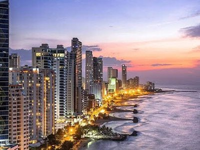
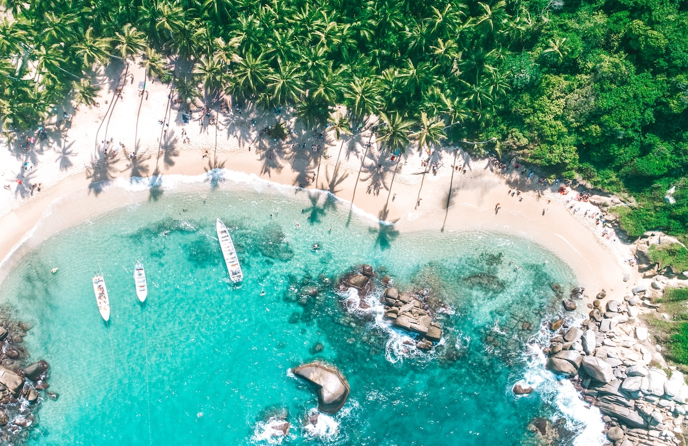
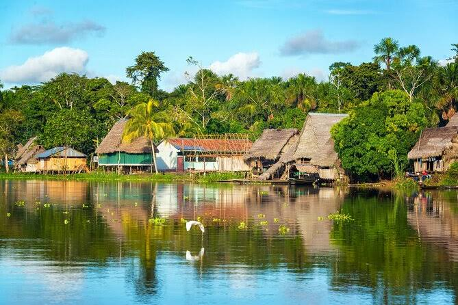

San Andrés
San Andrés es un destino turístico popular en Colombia, conocido por sus playas de arena blanca, aguas cristalinas y arrecifes de coral. La isla ofrece una variedad de actividades acuáticas, como snorkel, buceo y paseos en bote.
San Andrés es un destino turístico popular en Colombia, conocido por sus playas de arena blanca, aguas cristalinas y arrecifes de coral. La isla ofrece una variedad de actividades acuáticas, como snorkel, buceo y paseos en bote.

Famosa por su arquitectura colonial, sus coloridas calles dentro de la ciudad amurallada y sus hermosas playas. Es un destino lleno de historia, gastronomía y encanto del Caribe colombiano.

Hogar de las majestuosas palmas de cera en el Valle de Cocora y de las tradicionales fincas cafeteras. Ideal para los amantes de la naturaleza, el buen café y los paisajes montañosos.

Conocida como la ciudad de la eterna primavera. Destaca por su innovación, cultura, eventos como la Feria de las Flores y atractivos como el Peñol de Guatapé a pocas horas de la ciudad.

Un paraíso donde la selva tropical se encuentra con el mar Caribe. Perfecto para hacer senderismo, disfrutar de playas vírgenes y desconectarse en medio de la naturaleza.

Un impresionante paisaje árido en el departamento del Huila. Es uno de los mejores lugares en Colombia para el turismo astronómico y la observación de estrellas gracias a sus cielos despejados.

Ubicada en el Pacífico colombiano, es un santuario natural perfecto para el avistamiento de ballenas jorobadas, caminatas por la selva y el ecoturismo en playas vírgenes.

La puerta de entrada al Amazonas colombiano. Un destino fascinante para explorar la selva tropical, navegar por el río y conocer la rica biodiversidad y cultura indígena.

Conocido como el "río de los cinco colores", ubicado en La Macarena. Sus aguas cristalinas revelan plantas acuáticas de tonos rojos, amarillos y verdes únicos en el mundo.